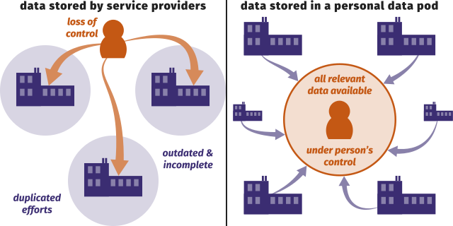

Een oceaan van data
Ruben Verborgh
Ghent University – imec
ecosystem |ˈēkōˌsistəm|
noun Ecology
-
a biological community of interacting organisms
and their physical environment
-
(in general use) a complex network
or interconnected system
- Silicon Valley's entrepreneurial ecosystem
Three inventions changed
the world of communication.
-
writing
-
the printing press
- one-to-many communication
-
the World Wide Web
- many-to-many communication
The Web was created as a solution
to heterogeneous information systems.
-
Scientists at CERN each brought
their own computers.
-
They were sitting on a mountain
of untapped potential.
-
Librarians soon started realizing:
the Web is here to stay.
The Web allows for an ocean of data
to thrive all around the world.
-
What does Web-shaped knowledge look like?
Tables store one kind of data
into rows with identical shapes.
Relational databases store
multiple kinds of data in tables.
Hierarchical models allow for
nested data representations.
Linked Data enables knowledge graphs
that are highly flexible and distributed.
Linked Data lets us capture knowledge
in different and flexible ways.
 © David Simonds
© David Simonds
Every piece of data created by a person
or about them, is stored in a data pod.

Apps and services appear similarly,
but they blend data from many sources.

A person can grant apps and people access
to very specific parts of their data.

Separating app and storage competition
creates better offerings for all parties.

By abandoning data harvesting,
we restore permissionless innovation.

Solid is not a company or organisation.
Solid is not (just) software.
-
Solid is an ecosystem.
- Standards enable interoperability.
-
Solid is a movement.
- We need to shift the app builder mindset.
-
Solid is a community.
-
Building Solid requires different people,
companies, and organisations.
Crucial challenges in Solid
are solved by Linked Data.
-
If we all store our own data,
how do we connect it to others’ data?
-
How can apps share data,
without too many prior agreements?
-
How do we integrate data
from multiple data pods?
With Linked Data, every piece of data
can link to any other piece of data.
{
"@context": "https://www.w3.org/ns/activitystreams",
"id": "#ruben-likes-iaz-2021",
"type": "Like",
"actor": "https://ruben.verborgh.org/profile/#me",
"object": "https://www.vvbad.be/Informatie-Aan-Zee-2021#this",
"published": "2021-10-14T08:00:00Z"
}
Data shapes and their semantics
enable layered compatibility.
{
"@context": "https://www.w3.org/ns/activitystreams",
"id": "#ruben-likes-apidays2018",
"type": "Like",
"actor": "https://ruben.verborgh.org/profile/#me",
"object": "https://www.vvbad.be/Informatie-Aan-Zee-2021#this",
"published": "2021-10-14T08:00:00Z"
}
Different source data
can be concatenated.
{
"@context": "https://www.w3.org/ns/activitystreams",
"@graph": [{
"type": "Like",
"actor": "https://ruben.verborgh.org/profile/#me",
"object": "https://www.vvbad.be/Informatie-Aan-Zee-2021#this",
"published": "2021-10-14T08:00:00Z"
},{
"type": "Like",
"actor": "https://example.org/people/erhan#me",
"object": "https://www.vvbad.be/Informatie-Aan-Zee-2021#this",
"published": "2021-10-14T08:05:00Z"
}]
}
Collection data starts decentralized.
Why do we centralize via aggregation?
-
visibility and discovery
- data has higher chance of being found in an aggregator
-
quality
- aggregator can align data cross datasets
-
infrastructure
- only the aggregator needs complex software
I have been publishing my own metadata
since before most of these existed.
-
The only correct publication record
is the one that I publish myself.
-
I am the source of truth
of my publication metadata.
-
I have one page of all my publications
and one page for each publication.
- All are semantically marked up.
-
I publish all of this as Linked Data.
I want to be the source of truth.
I don’t need to be the only source.
-
I have this recurring dream in which
all of these platforms just harvest my data.
-
They can have it for free—it’s CC0.
-
I almost wish I could pay
to give them the correct data.
What flows back to data producers
as a return from aggregators?
-
Do you receive the improvements
that were made to your metadata?
-
Can you leverage the connections
that were made with your data?
-
Do you receive additional data
that can help you improve?
Imagine all sorts of feedback
we are missing out on.
- What are people looking at most?
- What metadata fields do people use?
- What are people searching for?
Current networks are centered
around the aggregator.

We need to create network flows
to and from the aggregator.

The individual network nodes
need to become the source of truth.

Aggregators need to become part
of a larger network.

Aggregators serve as a crucial
but transparent layer in the network.

Aggregators’ main responsibility becomes
fostering a network between nodes.